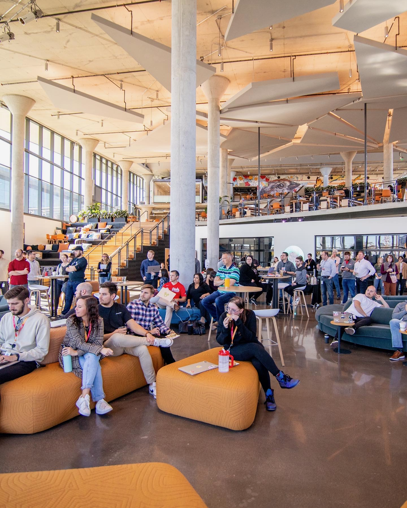
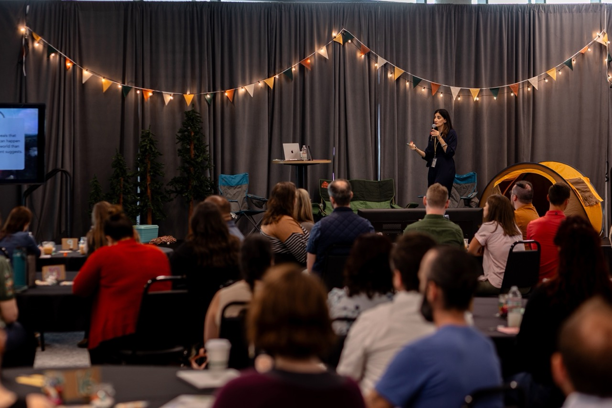
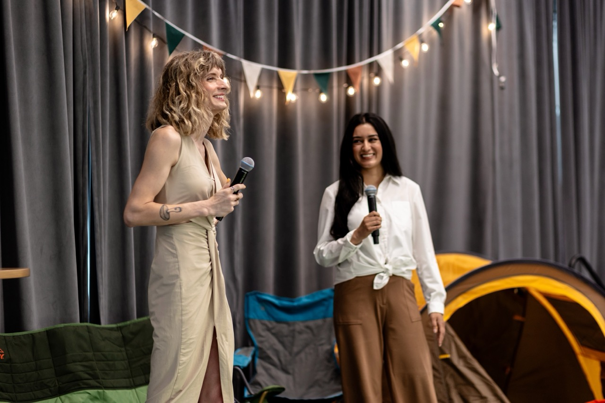

Producer of events, experiences, films, music, and care.
Making space for human creativity in whatever form it takes.
event design
Crafting meaningful events that drive change is my obsession, from hackathons and purposeful conferences to community service that has a lasting impact. My heart sings cooking up the tiny details that turn an experience magical.
Alongside years of producing short films, theatre shows, and music, I worked in analytics and tech, gaining a deep love for bringing people together. I’ve applied this to the design and execution of over a hundred events – including a flagship annual analytics conference unlike any other company gathering.
I have a depth of experience with both in-person and virtual experiences, managing high-performing teams, nurturing vendor partnerships, and collaborating with everyone from the C-suite to individual contributors to craft effective change.



career chops
Change Management • AI Enablement & Ethics • Team Management • Program Ownership • Employee Engagement
My foundation in data & AI, change management, and event design stems directly from my time in technical theatre and production.
As Director of Marketing & Technology for Stalwart Theatre, I oversaw the invisible gears that make a show spectacular. I managed event technology, production, vendor relations, and front-of-house operations for numerous original and licensed stage productions.
It taught me that whether you're bringing together 100 people in a black box theatre or 850 engineers at a corporate summit, the goal is the same: creating a shared, unforgettable experience.

street medic
Serving the unhoused community in Columbus.
Hundreds of hours spent on wound care and community support.
original music
Tracking in the studio and orchestrating exciting live shows are my jam! Below are a few tunes I wrote and produced.
short films
Writer and producer, orchestrating all the moving pieces behind the camera. Managed production teams, shoot logistics, budgets, and creative solutioning.